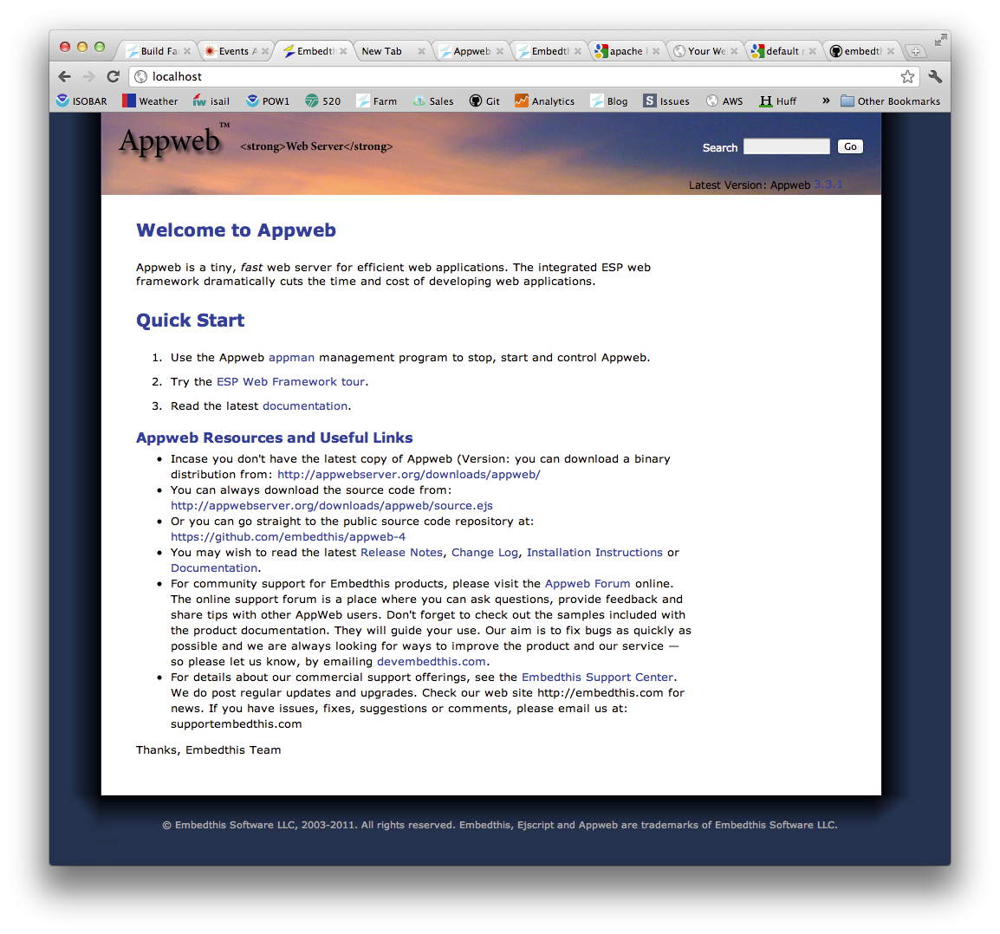
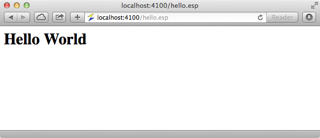
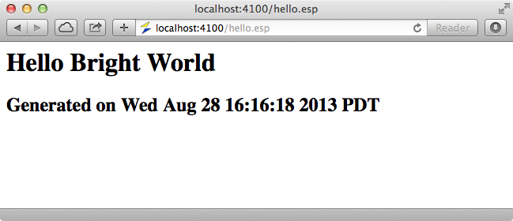

Quick Nav
See Also
ESP Pages Tour
This quick tour of the ESP Web Framework provides an overview of ESP and how to use it in web pages. First make sure you have read the Quick Start and that you have Appweb installed on your system so you can type along as you go.
Starting Appweb
When Appweb is installed, it will start automatically and run in the background. You can start and stop Appweb via the "appman" command.
appman start appman stop
Type appman -? to see a list of options. See Running Appweb as a System Service for platform specific details about starting and stopping Appweb.
Manually Running Appweb
When developing, it can be most convenient to run Appweb manually. To run Appweb directly, use this command:
sudo appweb -v
You must be in a directory containing an appweb.conf configuration file.
Testing Appweb
After installing Appweb, you can test it by entering http://localhost/test.esp in your browser. You should see the following page:
Hello World
The first step in any tour is to create a simple "Hello World" web page. ESP web pages have an .esp extension. Create a file called hello.esp under the directory nominated as your Documents directory in the appweb.conf configuration file. Create a file using your favorite text editor with the following content:
<html> <body> <h1>Hello World</h1> </body>
Don't worry about the layout directive for now, that tells ESP not to use a layout page.
To view the "Hello" web page, type the following url: http://localhost/hello.esp into your browser.
Dynamic Content
While that was fun, the output is static and boring, so let's add some dynamic content. You can embed "C" language code and ESP function calls by including them inside a special ESP web page directive that will be executed and converted to HTML before being sent to the client. There are a variety of server-side ESP web page directives, the one you'll use first, is:
<%= expression %>.
To add the current date and time, modify the hello.esp web page and add the highlighted line:
<h1>Hello Bright World</h1> <h2>Generated on <%= mprGetDate(0); %></h2>
Now when you re-run the page, it will display the current date and time. If you refresh the page by pressing reload, the new date and time will be displayed.
No Restart Required
Notice that you did not have to restart the web server, nor did you have to manually recompile the ESP code. Rather, ESP transparently recompiled the web page in the background. ESP noticed that the hello.esp web page had been modified and it re-parsed and compiled it into a loadable module ready for execution. This web module is then cached in-memory and on-disk for fast execution.
You can also embed more complex ESP into our page, like:
<h3><% render("Request method is %s", getMethod()); %></h3>
<%
int i;
for (int i = 0; i < 10; i++) {
render(" Line: %d</br>\r\n", i);
}
%>
By using the ESP statement directive <% code %>, you can embed arbitrary "C" language statements in your web page. The render function allows you to write arbitrary data which is patched back where the directive was defined in the page. See the Web Pages and Templates document for full details about all the ESP web page directives.
Declarations
Some compilers (Microsoft CL) do not permit "C" declarations except at the start of a block. When ESP compiles an ESP web page, it converts it to "C" code and wraps it inside a function that will be invoked at run-time in response to client requests. ESP supports MSCL by controlling where ESP code will be placed in the web page function. To ensure that declarations are emitted at the start of the function block use the ^start directive.
<%^start
char *msg = "hello world";
int x = 42;
%>
<% render("%s, the answer is %d", msg, x); %>
Forms and Request Params
When an HTML form is submitted via a POST request, ESP converts form data and query parameters into ESP request parameters. These can be accessed via the param() function or more conveniently via the literal @@variable directive. By prefixing a variable with @@ ESP will automatically look up the request parameters, and if not found, the session data store for the variable, and then substitute its value.
If an HTTP request has the URI: http://localhost/submit.esp?name=julie, then the following ESP code could access the user name directly.
<p>User Name: @@name</p>
XSS Security
Normally, echoing user input back to the client in a web page is bad practice and can invite XSS security attacks. Fortunately, ESP HTML escapes the @@variable value to prevent such attacks.
General ESP output can also be escaped by using a "safe" "%S" format specifier. The renderSafe function can also be used.
<p>User Name: <%=%S param("name"); %></p>
<p>User Name: <%= renderSafe(param("name")); %></p>
Sessions and Flash
ESP provides an integrated session store so that state can be shared across requests. Session variables can be accessed using the @@variable directive in ESP pages or via the getSessionVar() API.
Flash storage is a portion of the session storage used to pass messages and state to the next request controller only. This is useful after an error, to pass information to the next controller. Messages can be added to flash storage via the flash API.
<% flash("inform", Record updated"); %>
Layouts
ESP Layouts provide a powerful and flexible solution for implementing a consistent UI. ESP pages use layout pages that define the look and feel of an application. Content pages are then rendered by merging with one or more layout pages that define the look and feel of the application to create a composite page that the user will actually see. In this way, a web application can easily maintain a consistent look and feel without repeating boilerplate code from page to page.
A layout page provides template for the page and defines the location for the content via a <%@ content %> directive.
<html>
<body>
<div class="top">
<img src="banner.jpg" />
</div>
<div class="content">
<%@ content %>
</div>
</body>
</html>
A content page defines only the HTML and code that is unique for a specific page. It is merged with a layout page by inserting the content and replacing the <%@ content %> tag in the layout page.
To use a layout page, a layout directory must be defined in the appweb.conf configuration file using the EspDir directive. With this directive, pages will use the "./layouts/default.esp" layout page by default.
EspDir layout "./layouts"
The ESP <%@ layout directive may be used in web pages to control what layout page (if any) is used for the page.
<%@ layout "custom-layout.esp" %> <h1>Hello Bright World</h1>
Learn More ...
That concludes a quick tour through some of the capabilities of the ESP web framework.
To learn more, please read:
You may also like to ask questions at the Appweb Support Forum.